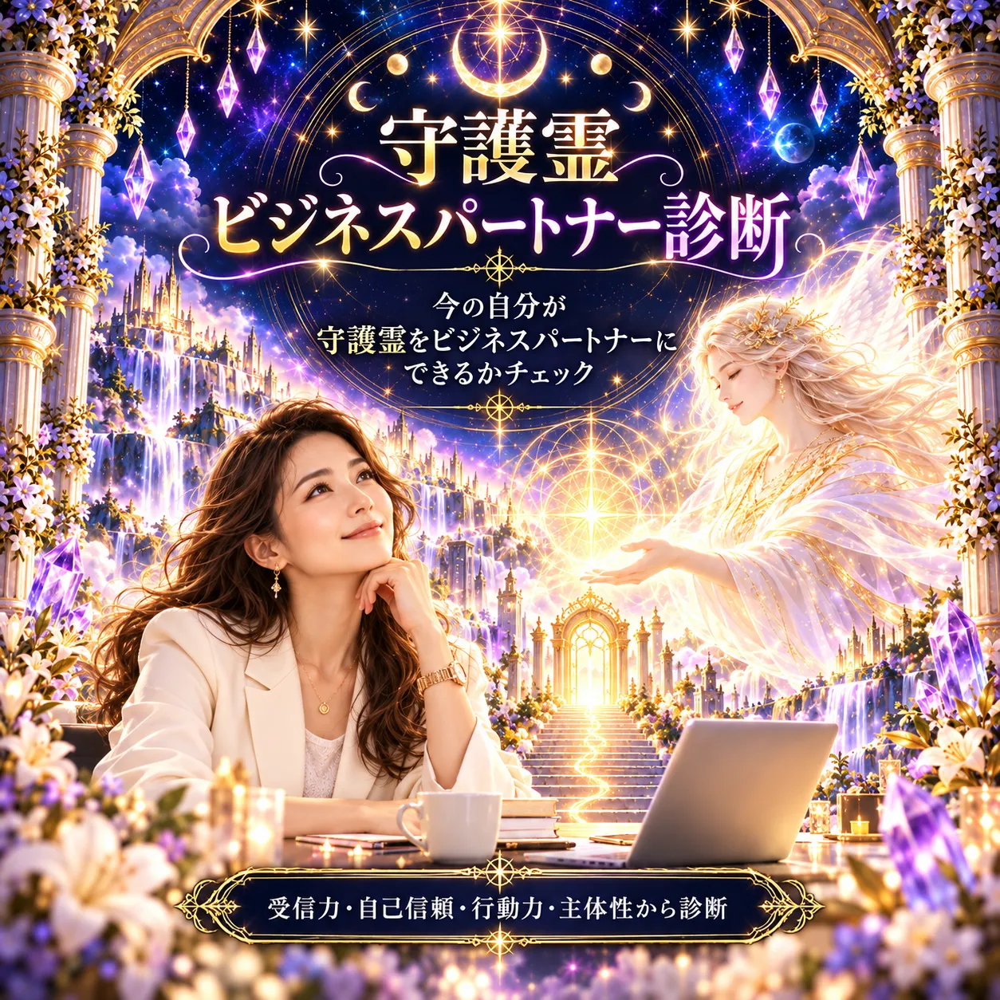
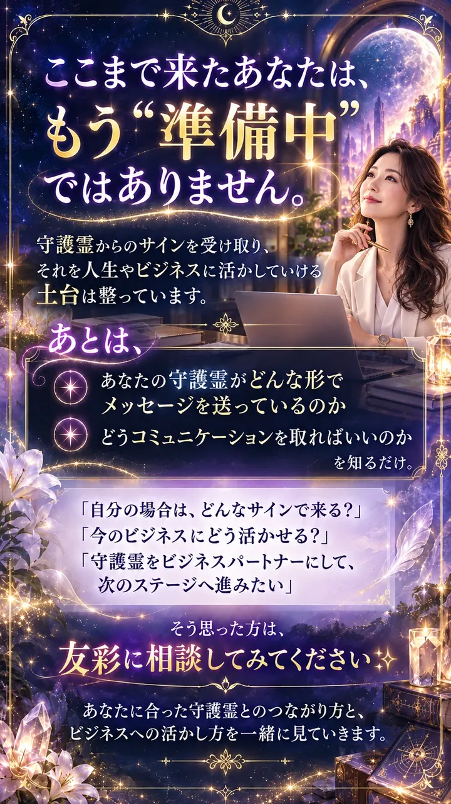
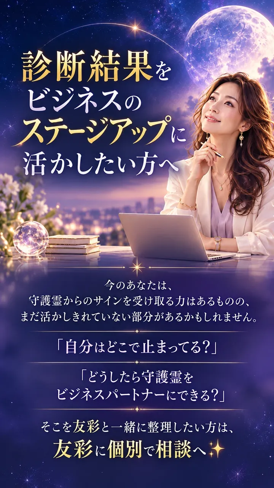
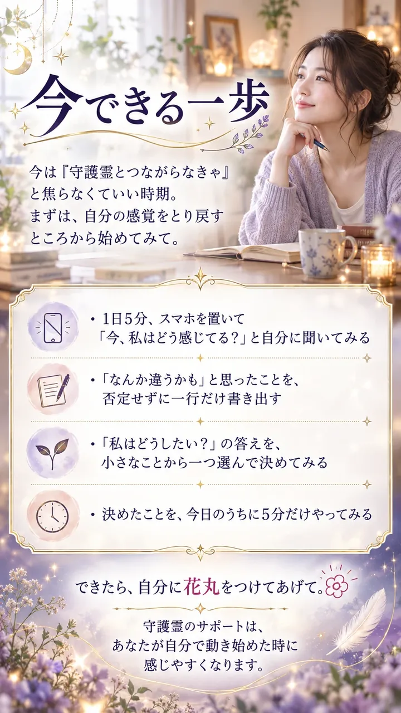

<meta charset="utf-8">
<meta name="viewport" content="width=device-width, initial-scale=1, viewport-fit=cover">
<title>守護霊ビジネスパートナー診断</title>
<link rel="preconnect" href="https://fonts.googleapis.com">
<link rel="preconnect" href="https://fonts.gstatic.com" crossorigin>
<link rel="stylesheet" href="https://fonts.googleapis.com/css2?family=Shippori+Mincho+B1:wght@500;700;800&family=Zen+Maru+Gothic:wght@400;500;700&display=swap">
<style>
/* Layout: 星空の上に浮かぶ一画面一問のカード。上に光の輪、下に回答ボタン。結果は総合タイプ→4項目バー→組み合わせ→個別相談のご案内 */
/* 夜空の世界観に固定（ライト／ダークどちらの環境でも同じ見た目） */
:root {
  --night: #120d26;          /* 夜空の深い藍紫 */
  --night-2: #2a1b4d;        /* 夜明け前の紫 */
  --veil: rgba(255, 255, 255, .06);   /* カードの薄いヴェール */
  --veil-line: rgba(232, 214, 255, .18);
  --ink: #f3ecff;            /* 月明かりの白 */
  --muted: #b9abd6;          /* ラベンダーグレー */
  --lavender: #c7a8ff;       /* アクセントの紫 */
  --lavender-soft: rgba(199, 168, 255, .16);
  --gold: #f2d38a;           /* 光・金の粒子 */
  --gold-deep: #d9a84e;
  --glow: rgba(242, 211, 138, .45);
  --display: "Shippori Mincho B1", "Hiragino Mincho ProN", "Yu Mincho", serif;
  --body: "Zen Maru Gothic", "Hiragino Maru Gothic ProN", "Hiragino Sans", "Yu Gothic", system-ui, sans-serif;
  color-scheme: dark;
}
* { box-sizing: border-box; }
html { background: var(--night); }
body {
  margin: 0; min-height: 100%; color: var(--ink);
  background:
    radial-gradient(ellipse 80% 50% at 50% -10%, rgba(199, 168, 255, .28), transparent 70%),
    radial-gradient(ellipse 60% 40% at 85% 100%, rgba(242, 211, 138, .12), transparent 70%),
    linear-gradient(180deg, var(--night) 0%, var(--night-2) 100%);
  background-attachment: fixed;
  font-family: var(--body); font-size: 16px; line-height: 1.9; letter-spacing: .02em;
}
#stars { position: fixed; inset: 0; width: 100%; height: 100%; pointer-events: none; z-index: 0; }
.wrap { position: relative; z-index: 1; max-width: 560px; margin: 0 auto; padding: 32px 16px 56px; display: grid; gap: 24px; }
h1, h2, h3 { font-family: var(--display); font-weight: 700; text-wrap: balance; margin: 0; line-height: 1.5; letter-spacing: .06em; }
h1 {
  font-size: 1.9rem; font-weight: 800;
  background: linear-gradient(180deg, #fff8e6 0%, var(--gold) 55%, var(--gold-deep) 100%);
  -webkit-background-clip: text; background-clip: text; color: transparent;
  text-shadow: 0 0 24px rgba(242, 211, 138, .25);
}
h2 { font-size: 1.45rem; }
h3 { font-size: 1.1rem; color: var(--gold); text-align: center; }
h3::before, h3::after { content: "✦"; font-size: .7em; color: var(--lavender); margin: 0 .6em; vertical-align: .15em; }
p { margin: 0; }
.eyebrow { font-size: .78rem; letter-spacing: .24em; color: var(--lavender); font-weight: 700; text-align: center; }
.eyebrow::before, .eyebrow::after { content: "·"; margin: 0 .7em; color: var(--gold); }
.muted { color: var(--muted); font-size: .92rem; }
header .muted { font-size: .86rem; letter-spacing: 0; }

/* はじめの画面のメイン画像（ふちを夜空になじませる） */
.hero {
  display: block; width: calc(100% + 32px); max-width: calc(100% + 32px); height: auto; margin: -32px -16px 0;
  aspect-ratio: 1 / 1;
  -webkit-mask-image: radial-gradient(ellipse 75% 75% at 50% 50%, #000 62%, transparent 100%);
  mask-image: radial-gradient(ellipse 75% 75% at 50% 50%, #000 62%, transparent 100%);
}
.sr-only { position: absolute; width: 1px; height: 1px; padding: 0; margin: -1px; overflow: hidden; clip: rect(0 0 0 0); white-space: nowrap; border: 0; }

/* 光の輪 */
.halo { position: relative; width: 150px; height: 150px; margin: 0 auto; }
.halo span { position: absolute; inset: 0; border-radius: 50%; border: 1px solid var(--gold); opacity: .45; }
.halo span:nth-child(1) { border-style: dotted; border-width: 2px; }
.halo span:nth-child(2) { inset: 18px; opacity: .7; border-color: var(--lavender); }
.halo span:nth-child(3) {
  inset: 42px; opacity: 1; border: 0;
  background: radial-gradient(circle, #fffaf0 0%, var(--gold) 30%, rgba(242, 211, 138, .15) 65%, transparent 72%);
  box-shadow: 0 0 40px var(--glow);
}
.halo::after { content: ""; position: absolute; inset: -30px; border-radius: 50%; background: radial-gradient(circle, var(--glow), transparent 62%); opacity: var(--power, .5); transition: opacity .8s; }
@media (prefers-reduced-motion: no-preference) {
  .halo span:nth-child(1) { animation: spin 40s linear infinite; }
  .halo span:nth-child(2) { animation: breathe 6s ease-in-out infinite; }
  .halo span:nth-child(3) { animation: breathe 6s ease-in-out infinite .8s; }
  @keyframes spin { to { transform: rotate(360deg); } }
  @keyframes breathe { 50% { transform: scale(1.06); filter: brightness(1.15); } }
  .wrap > * { animation: rise .7s ease-out both; }
  .wrap > *:nth-child(2) { animation-delay: .08s; }
  .wrap > *:nth-child(3) { animation-delay: .16s; }
  .wrap > *:nth-child(4) { animation-delay: .24s; }
  @keyframes rise { from { opacity: .001; transform: translateY(8px); } }
}

.panel {
  background: var(--veil); border: 1px solid var(--veil-line); border-radius: 22px;
  padding: 24px 20px; display: grid; gap: 14px;
  backdrop-filter: blur(6px); -webkit-backdrop-filter: blur(6px);
  box-shadow: 0 10px 40px rgba(0, 0, 0, .25), inset 0 1px 0 rgba(255, 255, 255, .06);
}
.axes { display: grid; grid-template-columns: 1fr 1fr; gap: 10px; }
.axis-chip { border: 1px solid var(--veil-line); background: var(--lavender-soft); border-radius: 14px; padding: 12px; display: grid; gap: 2px; }
.axis-chip b { font-family: var(--display); font-size: 1.02rem; color: var(--gold); }
.axis-chip small { color: var(--muted); font-size: .8rem; line-height: 1.6; }

.btn {
  appearance: none; border: 0; cursor: pointer; font: inherit; font-weight: 700; letter-spacing: .08em;
  background: linear-gradient(135deg, #fff1c9 0%, var(--gold) 45%, var(--gold-deep) 100%);
  color: #2a1b4d; border-radius: 999px; padding: 15px 22px;
  width: 100%; font-size: 1.02rem; transition: transform .15s, box-shadow .2s;
  box-shadow: 0 0 0 1px rgba(255, 255, 255, .25) inset, 0 6px 26px rgba(242, 211, 138, .35);
}
.btn:hover { box-shadow: 0 0 0 1px rgba(255, 255, 255, .35) inset, 0 8px 34px rgba(242, 211, 138, .55); }
.btn:active { transform: scale(.98); }
.btn:focus-visible, .choice:focus-visible, .back:focus-visible { outline: 2px solid var(--lavender); outline-offset: 4px; }

/* 質問画面 */
.progress { display: grid; gap: 8px; }
.progress-top { display: flex; justify-content: space-between; align-items: baseline; font-size: .85rem; color: var(--muted); font-variant-numeric: tabular-nums; letter-spacing: .1em; }
.bar { height: 6px; background: rgba(255, 255, 255, .08); border-radius: 999px; overflow: hidden; }
.bar i { display: block; height: 100%; background: linear-gradient(90deg, var(--lavender), var(--gold)); border-radius: 999px; transition: width .4s; box-shadow: 0 0 12px var(--glow); }
.q-img { display: block; width: 100%; height: auto; aspect-ratio: 1 / 1; object-fit: cover; border-radius: 16px; border: 1px solid var(--veil-line); box-shadow: 0 0 30px rgba(199, 168, 255, .18); }
.q-card { position: relative; border-radius: 18px; overflow: hidden; border: 1px solid var(--veil-line); box-shadow: 0 0 34px rgba(199, 168, 255, .22); }
.q-card img { display: block; width: 100%; height: auto; }
.choice.hot { position: absolute; padding: 0; background: transparent; border: 0; border-radius: 999px; box-shadow: none; }
.choice.hot:hover { background: rgba(255, 255, 255, .08); box-shadow: 0 0 26px rgba(242, 211, 138, .45); }
.choice.hot[aria-pressed="true"] { background: rgba(255, 255, 255, .12); box-shadow: 0 0 0 3px var(--gold), 0 0 30px rgba(242, 211, 138, .6); }
.result-card { border-radius: 18px; overflow: hidden; border: 1px solid var(--veil-line); box-shadow: 0 0 40px rgba(242, 211, 138, .22); }
.result-card img { display: block; width: 100%; height: auto; }
.q-text { font-family: var(--display); font-size: 1.3rem; line-height: 1.8; min-height: 5.4em; text-align: center; display: grid; place-items: center; }
.choices { display: grid; grid-template-columns: 1fr 1fr; gap: 12px; }
.choice {
  appearance: none; font: inherit; cursor: pointer; color: var(--ink);
  background: rgba(255, 255, 255, .04); border: 1px solid var(--veil-line); border-radius: 18px;
  padding: 18px 12px; display: grid; justify-items: center; gap: 2px; text-align: center;
  transition: border-color .2s, background .2s, box-shadow .2s;
}
.choice b { font-family: var(--display); font-size: 1.6rem; letter-spacing: .12em; color: var(--gold); }
.choice small { color: var(--muted); font-size: .82rem; }
.choice:hover { border-color: var(--gold); box-shadow: 0 0 22px rgba(242, 211, 138, .18); }
.choice[aria-pressed="true"] { border-color: var(--gold); background: rgba(242, 211, 138, .14); box-shadow: 0 0 28px rgba(242, 211, 138, .3); }
.back { appearance: none; background: none; border: 0; color: var(--muted); font: inherit; font-size: .9rem; cursor: pointer; padding: 6px 0; justify-self: center; }
.back:disabled { visibility: hidden; }

/* 結果画面 */
.score { text-align: center; display: grid; gap: 8px; }
.score-num { font-family: var(--display); font-size: 3.4rem; line-height: 1.1; color: var(--gold); font-variant-numeric: tabular-nums; text-shadow: 0 0 30px var(--glow); }
.score-num small { font-size: 1.1rem; color: var(--muted); text-shadow: none; }
.type-name { font-family: var(--display); font-size: 1.5rem; color: var(--ink); }
.rows { display: grid; gap: 16px; }
.row { display: grid; gap: 6px; }
.row-top { display: flex; justify-content: space-between; align-items: baseline; gap: 8px; }
.row-top b { font-family: var(--display); }
.row-top span { font-variant-numeric: tabular-nums; color: var(--muted); font-size: .92rem; }
.row .bar { height: 8px; }
.tag { display: inline-block; font-size: .72rem; padding: 1px 10px; border-radius: 999px; margin-left: 8px; vertical-align: 2px; font-family: var(--body); font-weight: 700; letter-spacing: .04em; }
.tag.hi { background: rgba(242, 211, 138, .2); color: var(--gold); }
.tag.lo { background: var(--lavender-soft); color: var(--lavender); }
.combo { font-family: var(--display); font-size: 1.2rem; line-height: 1.7; color: var(--gold); text-align: center; }
.note { font-size: .78rem; color: var(--muted); text-align: center; line-height: 1.7; opacity: .85; }
.catch { font-family: var(--display); font-size: 1.35rem; line-height: 1.6; color: var(--gold); text-align: center; text-wrap: balance; text-shadow: 0 0 20px var(--glow); }
.cta { text-align: center; border-color: rgba(242, 211, 138, .4); background: linear-gradient(180deg, rgba(242, 211, 138, .1), rgba(199, 168, 255, .08)); }
a.btn { text-decoration: none; display: block; text-align: center; }
.invite { gap: 14px; border-color: rgba(242, 211, 138, .4); background: linear-gradient(180deg, rgba(199, 168, 255, .12), rgba(242, 211, 138, .06)); }
.invite-head { font-family: var(--display); font-weight: 700; font-size: 1.12rem; color: var(--gold); text-align: center; text-wrap: balance; }
.invite-head::before, .invite-head::after { content: "✦"; font-size: .7em; color: var(--lavender); margin: 0 .5em; vertical-align: .15em; }
.invite ul { margin: 0; padding-left: 0; list-style: none; display: grid; gap: 8px; }
.invite li { position: relative; padding-left: 1.4em; }
.invite li::before { content: "✧"; position: absolute; left: 0; color: var(--gold); }
.toast { text-align: center; font-size: .85rem; color: var(--lavender); min-height: 1.4em; }
</style>

<canvas id="stars" aria-hidden="true"></canvas>
<div class="wrap" id="app"></div>

<script>
// 相談ボタンのリンク先（LINE公式アカウントなど）。決まったらここにURLを入れる
const CONSULT_URL = "https://sub.yuusai-parallelworld.com/p/parallelworldsession";

const AXES = [
  { key: "receive", name: "受信力",   desc: "守護霊からのサインや直感を受け取る力" },
  { key: "trust",   name: "自己信頼", desc: "受け取った感覚を自分で信じられるか" },
  { key: "action",  name: "行動力",   desc: "受け取ったメッセージを現実に活かせるか" },
  { key: "self",    name: "主体性",   desc: "守護霊に丸投げせず、自分の人生を自分で選べるか" },
];
const PER_AXIS = 5;

// どの質問も「YES＝ブレーキがかかっている状態」。NOと答えると1点
// 画像を出す問題は QUESTION_IMAGES に「問題番号: ファイル名」を足す
const QUESTION_IMAGES = {
};
// 質問文とYes/Noボタンが描かれた画像を使う問題。画像の中のボタンの位置（％）に押せる透明ボタンを重ねる
const QUESTION_CARDS = {
  1: { src: "q01.webp",
       yes: { left: 12, top: 76, width: 37, height: 16 },
       no:  { left: 51, top: 76, width: 37, height: 16 } },
  2: { src: "q02.webp",
       yes: { left: 14, top: 77, width: 35, height: 15 },
       no:  { left: 51, top: 77, width: 35, height: 15 } },
  3: { src: "q03.webp",
       yes: { left: 12, top: 76, width: 37, height: 16 },
       no:  { left: 51, top: 76, width: 37, height: 16 } },
  4: { src: "q04.webp",
       yes: { left: 12, top: 76, width: 37, height: 16 },
       no:  { left: 51, top: 76, width: 37, height: 16 } },
  5: { src: "q05.webp",
       yes: { left: 12, top: 76, width: 37, height: 16 },
       no:  { left: 51, top: 76, width: 37, height: 16 } },
  6: { src: "q06.webp",
       yes: { left: 12, top: 76, width: 37, height: 16 },
       no:  { left: 51, top: 76, width: 37, height: 16 } },
  7: { src: "q07.webp",
       yes: { left: 12, top: 76, width: 37, height: 16 },
       no:  { left: 51, top: 76, width: 37, height: 16 } },
  8: { src: "q08.webp",
       yes: { left: 12, top: 76, width: 37, height: 16 },
       no:  { left: 51, top: 76, width: 37, height: 16 } },
  9: { src: "q09.webp",
       yes: { left: 4, top: 73, width: 45, height: 21 },
       no:  { left: 51, top: 73, width: 45, height: 21 } },
 10: { src: "q10.webp",
       yes: { left: 12, top: 76, width: 37, height: 16 },
       no:  { left: 51, top: 76, width: 37, height: 16 } },
 11: { src: "q11.webp",
       yes: { left: 12, top: 76, width: 37, height: 16 },
       no:  { left: 51, top: 76, width: 37, height: 16 } },
 12: { src: "q12.webp",
       yes: { left: 12, top: 76, width: 37, height: 16 },
       no:  { left: 51, top: 76, width: 37, height: 16 } },
 13: { src: "q13.webp",
       yes: { left: 12, top: 78, width: 37, height: 17 },
       no:  { left: 51, top: 78, width: 37, height: 17 } },
 14: { src: "q14.webp",
       yes: { left: 12, top: 76, width: 37, height: 16 },
       no:  { left: 51, top: 76, width: 37, height: 16 } },
 15: { src: "q15.webp",
       yes: { left: 12, top: 76, width: 37, height: 16 },
       no:  { left: 51, top: 76, width: 37, height: 16 } },
 16: { src: "q16.webp",
       yes: { left: 4, top: 75, width: 45, height: 21 },
       no:  { left: 51, top: 75, width: 45, height: 21 } },
 17: { src: "q17.webp",
       yes: { left: 12, top: 78, width: 37, height: 17 },
       no:  { left: 51, top: 78, width: 37, height: 17 } },
 18: { src: "q18.webp",
       yes: { left: 13, top: 78, width: 36, height: 17 },
       no:  { left: 51, top: 78, width: 36, height: 17 } },
 19: { src: "q19.webp", w: 1312, h: 1199,
       yes: { left: 13, top: 82, width: 35, height: 15 },
       no:  { left: 50.5, top: 82, width: 36, height: 15 } },
 20: { src: "q20.webp",
       yes: { left: 7, top: 75, width: 42, height: 19 },
       no:  { left: 51, top: 75, width: 42, height: 19 } },
};
const QUESTIONS = [
  ["receive", "「なんか違うかも」と感じても、その感覚を無視してしまうことが多い"],
  ["receive", "やりたいことがあるのに、毎日のタスクに追われて後回しになっている。"],
  ["receive", "同じ言葉・数字・出来事が続いても、あまり気にしない"],
  ["receive", "人や場所に対する違和感を、自分の勘違いかも？と思って打ち消す"],
  ["receive", "忙しすぎて、自分の感覚を感じる余裕がほとんどない"],
  ["trust",   "自分の直観より、メンターや起業仲間など周りの意見を優先してしまう。"],
  ["trust",   "自分の感覚に自信がなく、メンターや占いなど、すぐ誰かに確認したくなる"],
  ["trust",   "「間違えたくない」という気持ちが強く、なかなか決められない"],
  ["trust",   "一度決めても、人に反対されるとすぐ揺らぐ"],
  ["trust",   "「私はどうしたい？」より「どうするのが正解？」を考えることが多い"],
  ["action",  "「チャレンジしてみたい」と心が動いても「怖い」と感じたらやらない選択をしてしまう"],
  ["action",  "チャンスが来ても「また今度」で後回しにすることが多い"],
  ["action",  "準備が完璧になるまで動けない"],
  ["action",  "学んで満足して、行動に移さないことが多い"],
  ["action",  "「今動いた方がいい」と感じても、不安の方を優先して止まる"],
  ["self",    "守護霊に正解を教えて欲しい"],
  ["self",    "守護霊に言われたことなら、そのまま従えばいいと思う"],
  ["self",    "うまくいかない時、真っ先に環境や人のせいだと考えてしまう"],
  ["self",    "守護霊がわたしの人生やビジネスをステージアップさせてくれる"],
  ["self",    "守護霊のサインが来た時だけ動けばいい"],
];

const CHOICES = [
  { pts: 0, label: "YES", sub: "あてはまる" },
  { pts: 1, label: "NO",  sub: "あてはまらない" },
];

// catch：結果のキャッチコピー／cta：相談ボタンの文言（nullならボタンなし）
const TYPES = [
  { min: 16, name: "守護霊ビジネスパートナー準備OK",
    image: { src: "result1.webp", w: 941, h: 1672 },
    catch: "今すぐ守護霊をビジネスパートナーに！", cta: "今すぐ友彩に相談！",
    text: "受け取る・信じる・動く・自分で決める、のバランスが整っている状態。守護霊からのサインを「答え」ではなく、人生やビジネスを進めるヒントとして活かしやすいタイプ。" },
  { min: 11, name: "もうすぐパートナータイプ",
    image: { src: "result2.webp", w: 941, h: 1672 },
    catch: "もうすぐパートナー！", cta: "あと一歩を友彩にサポートしてもらう！",
    text: "サインを感じる力はあるけれど、「本当にこれでいい？」と疑ったり、行動の手前で止まりやすいかも。必要なのは、もっとサインを探すことより、受け取ったものを小さく試してみること。" },
  { min: 6, name: "自分軸育成タイプ",
    catch: "今は準備中", cta: null,
    text: "守護霊からのサインより先に、「私は本当はどうしたい？」を整える段階。自分の意思が曖昧なままだと、どんなメッセージを受け取っても迷いやすい。まずは自分の選択に責任を持つ練習から。" },
  { min: 0, name: "まずは現実を動かすタイプ",
    image: { src: "result4.webp", w: 941, h: 1672 },
    catch: "今は準備中", cta: null,
    text: "今は「守護霊ともっとつながらなきゃ」と頑張るより、目の前の現実で自分ができることを一つずつ選ぶことが大切。守護霊に人生を動かしてもらうのではなく、自分が動き始めた時にサポートを感じやすくなる。" },
];

// 一番高い項目 × 一番低い項目 の組み合わせメッセージ
const COMBOS = {
  "receive>trust":  "サインは来てる。でも自分が疑って止めてるタイプ",
  "receive>action": "受け取ってるのに、動く手前で止まってるタイプ",
  "receive>self":   "サインは届くけど、答えを外に求めがちなタイプ",
  "trust>receive":  "自分の感覚は信じられる。力を抜くと、もっと受け取れるタイプ",
  "trust>action":   "わかってるのに腰が重い、慎重派タイプ",
  "trust>self":     "感覚は信じてる。でも人生のハンドルを人に預けがちなタイプ",
  "action>receive": "よく動ける。でも立ち止まって感じる時間が足りないタイプ",
  "action>trust":   "行動は早い。でも人の声で方向がブレやすいタイプ",
  "action>self":    "動いてはいる。でも「私はどうしたい？」が置き去りなタイプ",
  "self>receive":   "自分で決める力は十分。アンテナを開くと一気に加速するタイプ",
  "self>trust":     "自分で決めたい。でも自分の感覚にまだ自信が持てないタイプ",
  "self>action":    "意志はしっかりある。あとは一歩目を小さく踏み出すタイプ",
};

const app = document.getElementById("app");
let answers = new Array(QUESTIONS.length).fill(null);
let current = 0;

function axisName(key) { return AXES.find(a => a.key === key).name; }

function renderIntro() {
  app.innerHTML = `
    
    <header style="display:grid;gap:10px;text-align:center">
      <h1 class="sr-only">守護霊ビジネスパートナー診断</h1>
      <p class="muted">サポートを受け取って活かせる状態かどうか、<br>今のあなたの「パートナー度」を見てみよう。</p>
      <p class="muted">今の自分にあてはまれば YES、あてはまらなければ NO。<br>考えすぎず、直感で答えてね。</p>
    </header>
    <button class="btn" id="start">診断をはじめる</button>
    <p class="note">この診断は、今の在り方を見つめるためのセルフチェックです。</p>
  `;
  document.getElementById("start").onclick = () => { current = 0; renderQuestion(); };
}

function renderQuestion() {
  const [axis, text] = QUESTIONS[current];
  const img = QUESTION_IMAGES[current + 1];
  const card = QUESTION_CARDS[current + 1];
  const done = answers.filter(v => v !== null).length;
  const pos = r => `left:${r.left}%;top:${r.top}%;width:${r.width}%;height:${r.height}%`;
  const progress = `
    <div class="progress">
      <div class="bar"><i style="width:${(done / QUESTIONS.length) * 100}%"></i></div>
    </div>`;
  app.innerHTML = card ? `
    ${progress}
    <section class="q-card">
      
      <h2 class="sr-only">Q${current + 1} ${text}</h2>
      ${card.yes ? `
      <button class="choice hot" data-pts="0" style="${pos(card.yes)}" aria-label="YES（あてはまる）" aria-pressed="${answers[current] === 0}"></button>
      <button class="choice hot" data-pts="1" style="${pos(card.no)}" aria-label="NO（あてはまらない）" aria-pressed="${answers[current] === 1}"></button>` : ""}
    </section>
    ${card.yes ? "" : `
    <div class="choices" role="group" aria-label="回答を選ぶ">
      ${CHOICES.map(c => `
        <button class="choice" data-pts="${c.pts}" aria-pressed="${answers[current] === c.pts}">
          <b>${c.label}</b><small>${c.sub}</small>
        </button>`).join("")}
    </div>`}
    <button class="back" id="back" ${current === 0 ? "disabled" : ""}>← 前の質問にもどる</button>
  ` : `
    ${progress}
    <section class="panel">
      ${img ? `` : ""}
      <p class="eyebrow">Q${current + 1}</p>
      <p class="q-text">${text}</p>
      <div class="choices" role="group" aria-label="回答を選ぶ">
        ${CHOICES.map(c => `
          <button class="choice" data-pts="${c.pts}" aria-pressed="${answers[current] === c.pts}">
            <b>${c.label}</b><small>${c.sub}</small>
          </button>`).join("")}
      </div>
    </section>
    <button class="back" id="back" ${current === 0 ? "disabled" : ""}>← 前の質問にもどる</button>
  `;
  app.querySelectorAll(".choice").forEach(btn => {
    btn.onclick = () => {
      answers[current] = Number(btn.dataset.pts);
      app.querySelectorAll(".choice").forEach(b => b.setAttribute("aria-pressed", b === btn));
      setTimeout(() => {
        if (current < QUESTIONS.length - 1) { current++; renderQuestion(); }
        else renderResult();
      }, 220);
    };
  });
  document.getElementById("back").onclick = () => { if (current > 0) { current--; renderQuestion(); } };
  window.scrollTo({ top: 0 });
}

function scoreAxes() {
  const s = Object.fromEntries(AXES.map(a => [a.key, 0]));
  QUESTIONS.forEach(([axis], i) => { s[axis] += answers[i] || 0; });
  return s;
}

function renderResult() {
  const s = scoreAxes();
  const total = Object.values(s).reduce((a, b) => a + b, 0);
  const max = PER_AXIS * AXES.length;
  const type = TYPES.find(t => total >= t.min);
  const sorted = [...AXES].sort((a, b) => s[b.key] - s[a.key]);
  const hi = sorted[0], lo = sorted[sorted.length - 1];
  const gap = s[hi.key] - s[lo.key];
  const showCombo = gap >= 2;
  const combo = showCombo ? COMBOS[`${hi.key}>${lo.key}`] : "4つの力のバランスがそろっているタイプ";
  const power = Math.max(.2, total / max);
  // 個別相談ボタンは YES が0〜14個の人に出す
  const yesCount = QUESTIONS.length - total;
  const canConsult = yesCount <= 14;
  const showCta = type.cta && canConsult;
  // YES が15個以上の人には、相談ボタンの代わりに「今できる一歩」を出す
  const showFirstStep = yesCount >= 15;

  const ctaHtml = showCta ? `
    <section class="panel cta">
      <p class="catch">${type.catch}</p>
      <a class="btn consult" href="${CONSULT_URL || "#"}" target="_blank" rel="noopener">${type.cta}</a>
    </section>` : "";

  app.innerHTML = `
    ${type.image ? `
    <section class="result-card">
      
      <h2 class="sr-only">診断結果 ${type.catch} ${type.name} ${type.text}</h2>
    </section>
    <section class="score">
      <p class="eyebrow">あなたのパートナー度</p>
      <p class="score-num">${total}<small>／${max}点</small></p>
    </section>` : `
    <div class="halo" style="--power:${power.toFixed(2)}" aria-hidden="true"><span></span><span></span><span></span></div>
    <section class="score">
      <p class="eyebrow">あなたのパートナー度</p>
      <p class="score-num">${total}<small>／${max}点</small></p>
      ${showCta ? "" : `<p class="catch">${type.catch}</p>`}
      <h2 class="type-name">${type.name}</h2>
    </section>
    <section class="panel">
      <p>${type.text}</p>
    </section>`}
    ${canConsult && type.min === 16 ? `<section class="result-card">
      
      <div class="sr-only">ここまで来たあなたは、もう“準備中”ではありません。守護霊からのサインを受け取り、それを人生やビジネスに活かしていける土台は整っています。あとは、あなたの守護霊がどんな形でメッセージを送っているのか、どうコミュニケーションを取ればいいのかを知るだけ。「自分の場合は、どんなサインで来る？」「今のビジネスにどう活かせる？」「守護霊をビジネスパートナーにして、次のステージへ進みたい」そう思った方は、友彩に相談してみてください。あなたに合った守護霊とのつながり方と、ビジネスへの活かし方を一緒に見ていきます。</div>
    </section>` : canConsult ? `<section class="result-card">
      
      <div class="sr-only">診断結果をビジネスのステージアップに活かしたい方へ。今のあなたは、守護霊からのサインを受け取る力はあるものの、まだ活かしきれていない部分があるかもしれません。「自分はどこで止まってる？」「どうしたら守護霊をビジネスパートナーにできる？」そこを友彩と一緒に整理したい方は、友彩に個別で相談へ。</div>
    </section>` : ""}
    ${showFirstStep ? `<section class="result-card">
      
      <div class="sr-only">今できる一歩。今は「守護霊とつながらなきゃ」と焦らなくていい時期。まずは、自分の感覚をとり戻すところから始めてみて。1日5分、スマホを置いて「今、私はどう感じてる？」と自分に聞いてみる。「なんか違うかも」と思ったことを、否定せずに一行だけ書き出す。「私はどうしたい？」の答えを、小さなことから一つ選んで決めてみる。決めたことを、今日のうちに5分だけやってみる。できたら、自分に花丸をつけてあげて。守護霊のサポートは、あなたが自分で動き始めた時に感じやすくなります。</div>
    </section>` : ""}
    ${ctaHtml}
    <p class="toast" id="toast" role="status"></p>
    <p class="note">この診断は、今の在り方を見つめるためのセルフチェックです。<br>結果は「今」のあなた。行動が変われば点数も変わります。</p>
  `;
  const toast = document.getElementById("toast");
  if (!CONSULT_URL) {
    app.querySelectorAll(".consult").forEach(a => {
      a.onclick = e => { e.preventDefault(); toast.textContent = "相談の受付ページは準備中です。"; };
    });
  }
  window.scrollTo({ top: 0 });
}

renderIntro();

// 背景の星空（ゆっくりまたたく）
(function stars() {
  const cv = document.getElementById("stars");
  if (!cv || !cv.getContext) return;
  const ctx = cv.getContext("2d");
  const still = window.matchMedia && window.matchMedia("(prefers-reduced-motion: reduce)").matches;
  let pts = [];
  function resize() {
    const dpr = window.devicePixelRatio || 1;
    cv.width = innerWidth * dpr; cv.height = innerHeight * dpr;
    ctx.setTransform(dpr, 0, 0, dpr, 0, 0);
    const n = Math.round(innerWidth * innerHeight / 5000);
    pts = Array.from({ length: n }, () => ({
      x: Math.random() * innerWidth, y: Math.random() * innerHeight,
      r: Math.random() * 1.2 + .2, p: Math.random() * Math.PI * 2, s: Math.random() * .8 + .3,
      gold: Math.random() < .18,
    }));
  }
  function draw(t) {
    ctx.clearRect(0, 0, innerWidth, innerHeight);
    for (const st of pts) {
      const a = still ? .7 : .35 + .65 * (0.5 + 0.5 * Math.sin(st.p + t / 1000 * st.s));
      ctx.globalAlpha = a;
      ctx.fillStyle = st.gold ? "#f2d38a" : "#efe6ff";
      ctx.beginPath(); ctx.arc(st.x, st.y, st.r, 0, Math.PI * 2); ctx.fill();
    }
    if (!still) requestAnimationFrame(draw);
  }
  resize(); addEventListener("resize", resize);
  requestAnimationFrame(draw);
})();
</script>
